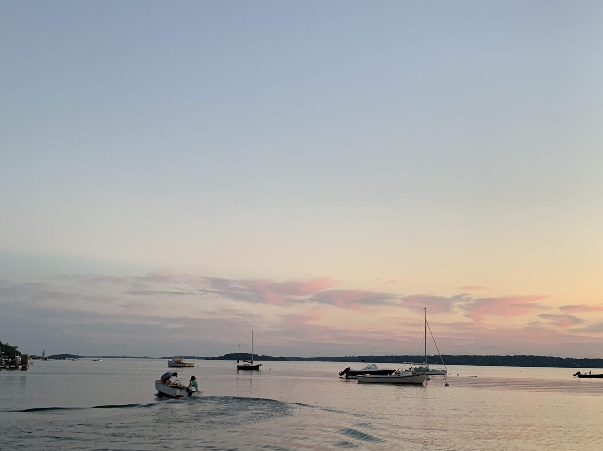
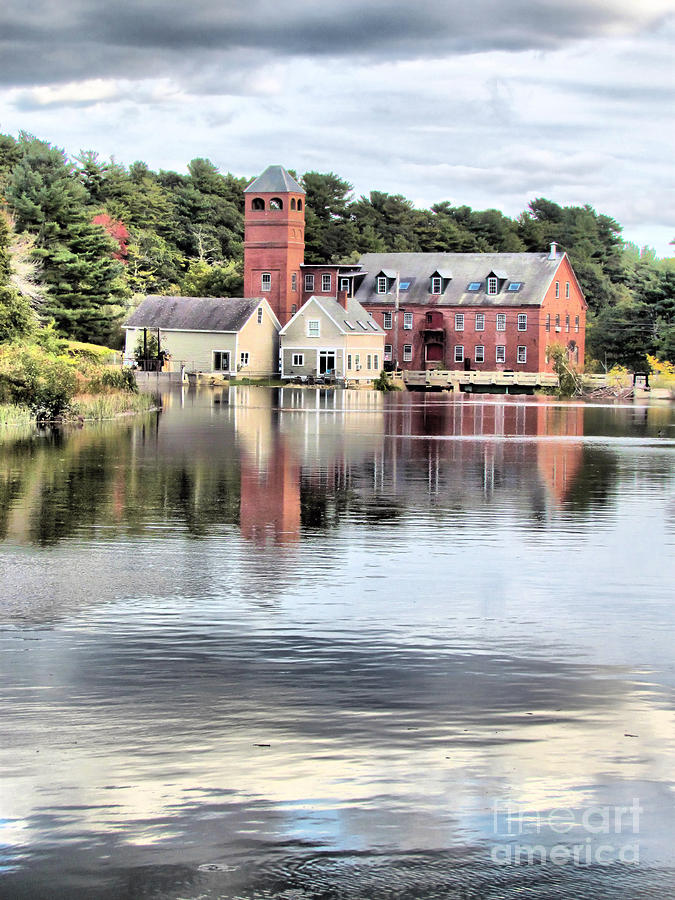
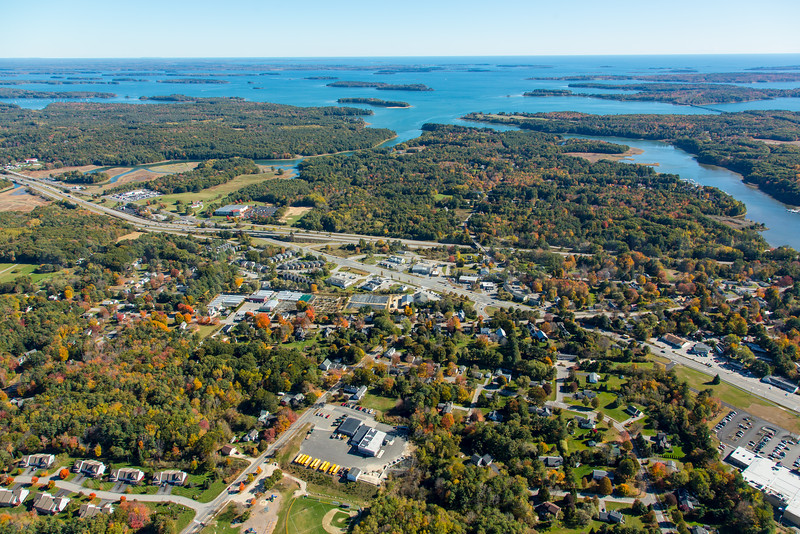
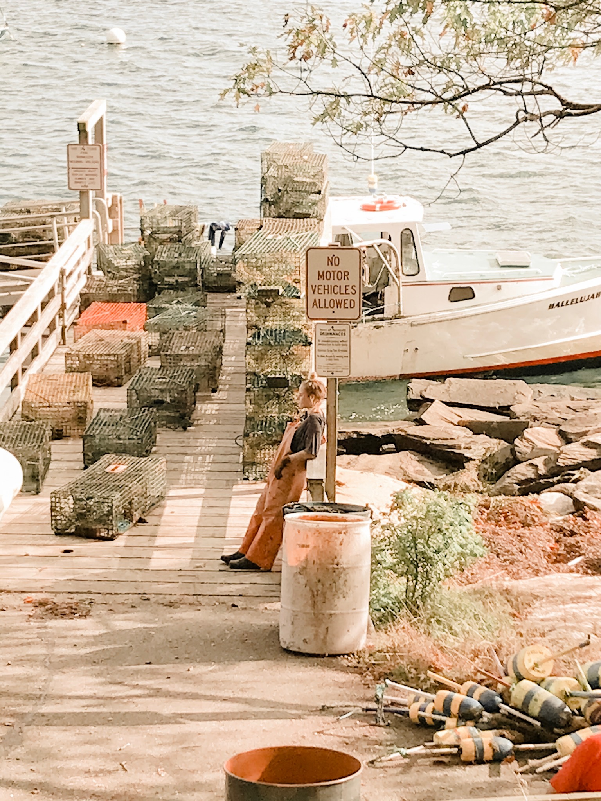
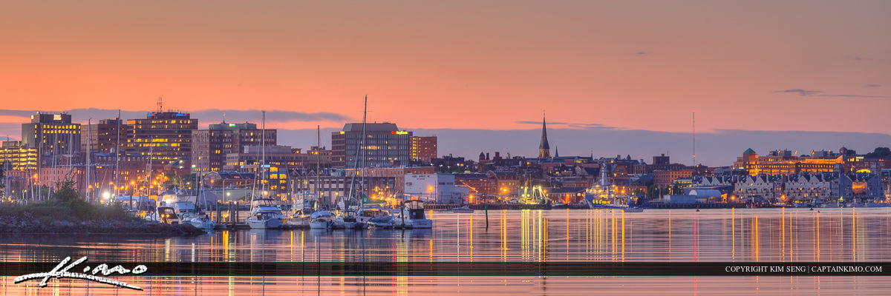

I live in an town that is about 20 minutes North of Portland. It's your typical small town, we have a very close knit community. We have everything from a hockey rink, smoothie and sandwhich shops to music studios. My friends and I spend most of our time on the water hanging out on Cousins Island.



My boyfriend is a lobsterman. He lives on Cousins Island he keeps his boat at the end of his street. I join him in the fall once his sternman goes back to school. I love being on the water, especially in the fall with all the foliage.

I'm orginally from Portland, but I moved to Yarmouth around 6th grade. Some of my best friends still live in Portland as well as some family, so I am there a lot. Downtown is one of my favorite places to go.

links to Home Page About Me My Favorite Things